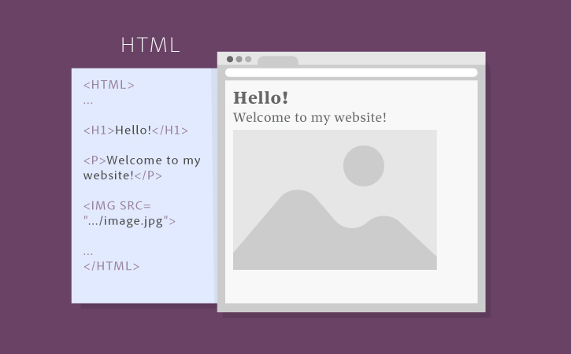
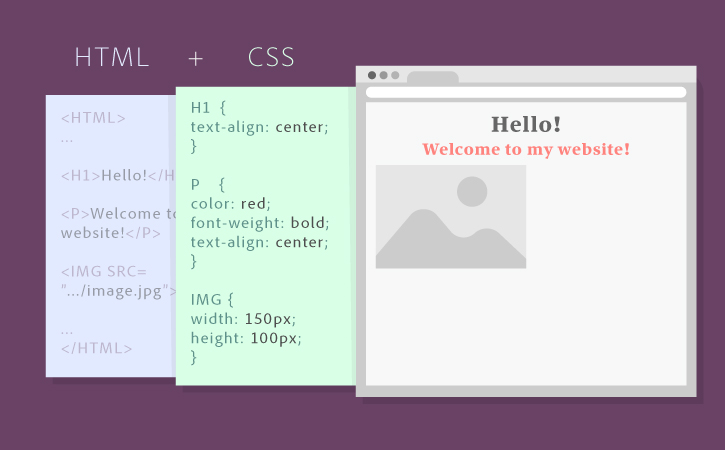
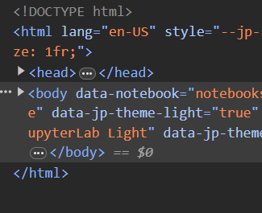
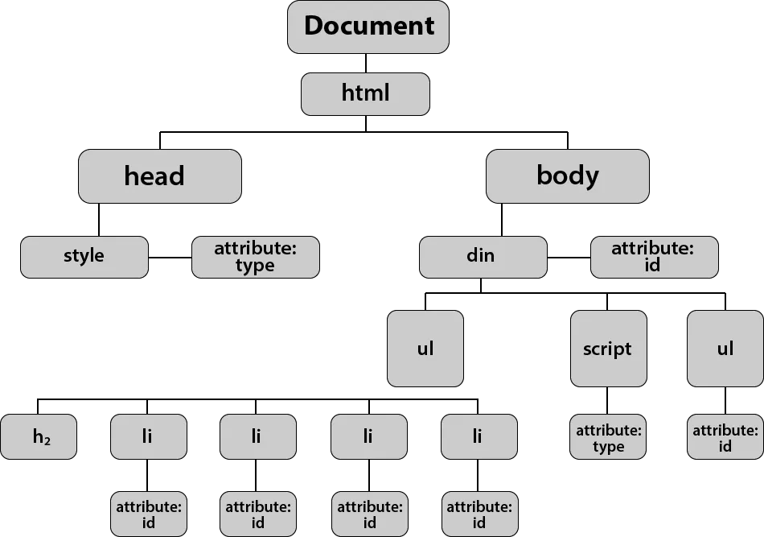
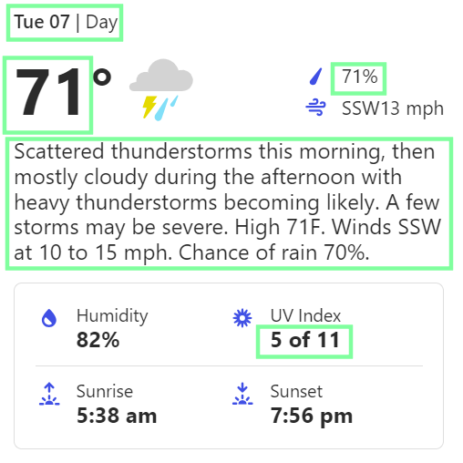

Web-scraping with BeautifulSoup4#
This document covers basic usage of bs4 (Beautiful Soup 4) for scraping a webpage. We will primarily discuss extracting information from one webpage, and leave web-crawling to an advanced class on web scraping.
To scrape or not to scrape#
Unlike APIs, which are designed for programs/applications to interact with the data, web-scraping is directly working with user-facing websites for humans.
Web scraping benefits: |
Web scraping challenges: |
|---|---|
Any content that can be viewed on a webpage can be scraped. |
Rarely tailored for researchers. |
No API needed. |
Your IP can be blocked (403) |
No rate-limiting or authentication (usually). |
Messy, unstructured, inconsistent. |
Entirely site-dependent. |
Rule of thumb: Check if there is an API. If not, then consider scraping.
Ethics of web scraping#
Several considerations before scraping:
Read the terms and conditions of data use.
robots.txtSelf-throttle, as in API usage.
Web-scrapers require regular maintenance (best coupled with CI/CD).
Anatomy of a webpage#
A website is typically built up from some combination of codebase and database. The front-end product combines HTML, CSS stylesheets, and javascript.
 |
|---|
Anatomy of a website (Adobe) |
 |
|---|
Anatomy of a website, with CSS styles (Adobe) |
Parsing a website#
Retrieving the website content is not difficult - extracting the exact useful information is.
HTML, briefly#
 |
|---|
HTML structure of this Jupyter notebook. |
HTML as a tree#
 |
|---|
HTML as a tree. Each branch is an element. |
Example with scrapethissite.com#
# beautifulsoup4 package and lxml parser
!pip install bs4
!pip install lxml
from bs4 import BeautifulSoup
import requests
url = 'https://www.scrapethissite.com/pages'
r = requests.get(url)
# accessing content
r.content[:100]
# using bs4
soup = BeautifulSoup(r.content)
# selecting by tags
h3_list = soup.find_all('h3')
# locate by tags ('a' contains links)
h3_list[0].find_all('a')[0]
# locate neighboring content
h3_list[0].find_all('a')[0].find_next('a').find_next('section')
Practice - BeautifulSoup (Item 4 is left as a challenge for you)#
Locate the tags and attributes for the following items:
 |
|---|
Fact card from weather.com. |
Create a dataframe with columns as the items:
DateDay
Temperature
Rain
UV
Description
Using
BeautifulSoup, populate the table for the first day.Repeat for the next nine days.
Further reference#
Read The Legalities and Ethics of Web Scraping cite:p{mitchell2018web} for a brief discussion on web-scraping ethics.